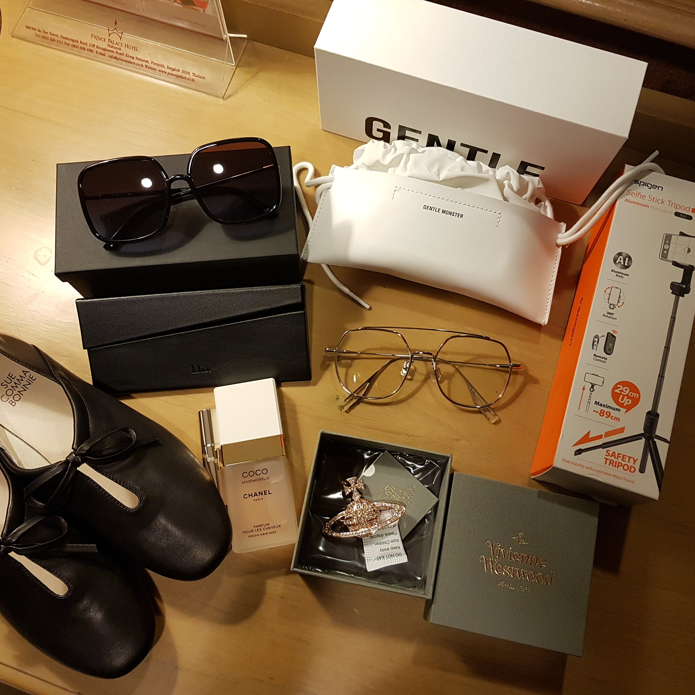
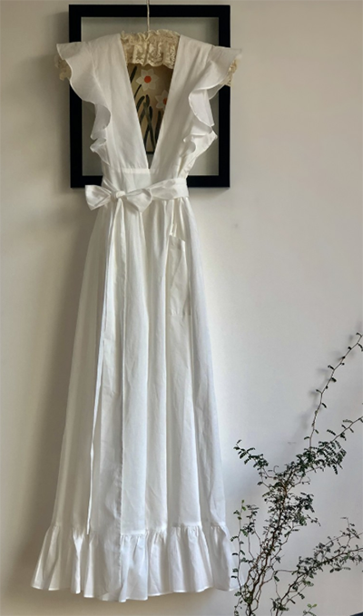
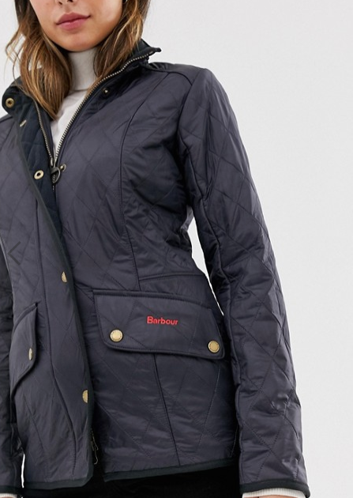
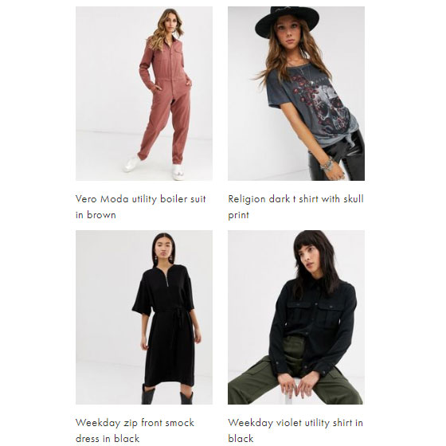
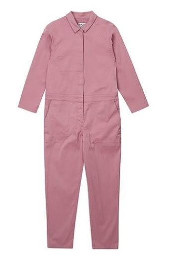
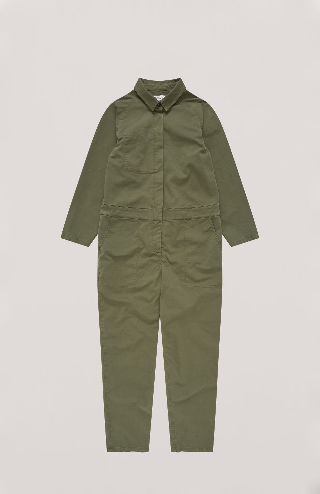

가끔 브레이크가 풀려 마구 쇼핑을 해대는 시기가 오는데 1월이 그랬습니다;;; 열심히 질렀어요 ㅋㅋㅋ방콕여행 예매하고 인터넷 면세 야곰야곰 구매했습니다인터넷 면세 짱이라능//// 쿠폰과 적립금을 적용하면 가격이 계속 내려가/// ㅋㅋㅋㅋ디올 선글라스 젠틀몬스터 부기 이제 안경 그만산다는 말 하기도 민망하지만 진짜 그만살거에요.........//조만간 사용안하는 제품은 정리할겁니다 녜슈콤마보니 슈즈 백화점 돌다가 우연히 발견했는데 너무 가볍고 착화감 좋습니다 :3샤넬 헤어미스트사람들이 좋다고 하는건 열심히 사봅니다 ㅋㅋ숏컷에 의미가 있을려나 싶었는데 바람불때마다 좋은 향기가 나니까 기분이 좋아요/// 맘에듭니다.비비안웨스트우드 브로치 큰 사이즈 갖고싶었는데 세일하길래(....) 망설임없이 겟 했습니다.오페라 립틴트호기심에 구매해봤는데 생각보다 그냥저냥 이에요 ^^삼각대 셀카봉킹파워 마하나콘 전망대에서 정말 잘 사용했습니다.삼각대 셀카봉 리모콘까지 있어서 편해요 세상 정말 좋아졌다능. 막상 여행지에서는 남들 다 사는 코끼리 바지도 안샀습니다.여행가서 사온 제품은 대부분 사용안해서 안사게 되더라구요
방콕 여행후기:
http://slimekyo.blog.me/221792676576.
.
.그리고 한달동안 마구 충동구매 한 리스트들
픽시 글로우 토닉
꾸준히 구매하고 있는 픽시 글로우 토닉
컬트뷰티 무배 떴길래 2통 쟁였습니다 :3
마담 드 쟌느 원피스(?)
롯데본점 면세 구경하러 갔다가 팝업스토어에서 보고 충동구매

요 아이의 깜장버전인데
위 레이스는 부담시려워서 오버사이즈 상의랑 같이 입고싶습니다 :p
과연 성공할 것인가(?)
이 브랜드 매력있어요// 활용도 상관없이 사고싶다능;;
ASOS 할인쿠폰에 넘어가 야곰야곰 질렀네요

바버 자켓
길에서 입은 사람이 넘 많이 보여서 망설였는데 충동구매했습니다.
깔깔이 최고라능

탑 2벌 / 점프수트, 원피스
2월에도 반팔반바지 점프수트를 하나 구매했는데
요즘 왜이리 점프수트에 꽂혔는지 모르겠습니다;;

YMC 점프수트이번 연휴 드라마는 동백꽃 필 무렵 이었습니다.
목요일 저녁부터 누워서 달리기 시작해서 방콕 오가는 비행기안에서 다 봤습니다 :D
공효진님이 입고 나온 옷은 다 예뻐보여요 ;ㅂ;
그중 분홍이 점프수트에 꽂혀 찾아보니 YMC 제품이군요.
런던서 회사댕길때 출퇴근길에 매장이 있어서 자주 들락거렸는데// 좋아하는 브랜드 입니다 홍홍
분홍이는 이미 품절이고 올리브색 세일중이라 이틀 고민하다가 막판에 질렀습니다. ㅎㅎㅎ

YMC Garland Boilersuit (Olive)
요건 배송 오는중
1월달 힘냈어여..............그만사야지..............반성합니다..............;;;